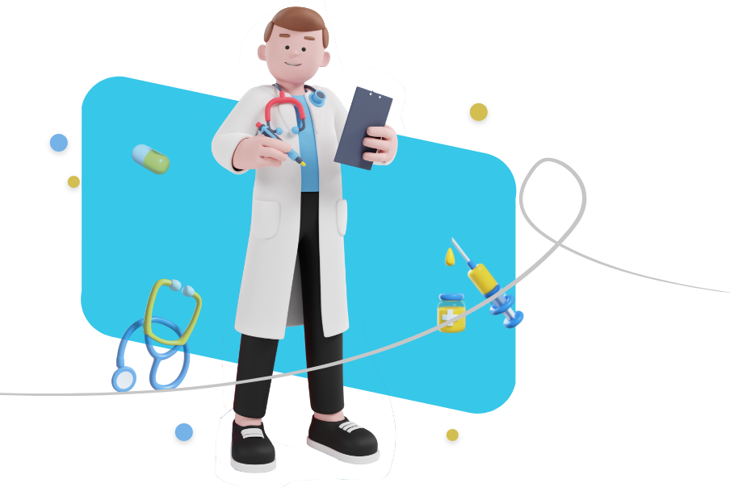

אני רופא.ה
הגעת לאתר הדרכה של האירדוק, מכשיר שעוזר בהקלה על כאבים באוזניים.
אנחנו יודעים שחשוב לכם.ן להיות מעודכנים בידע ובטכנולוגיות החדשות ביותר בתחום.
ואנחנו כאן כדי לסייע ולספק מידע מקיף ומקצועי עבור מכשיר האירדוק!

למה דווקא אירדוק
אילו טיפולים חלופיים קיימים בשוק?
אנטיביוטיקה
טיפות אוזניים
EarPopper